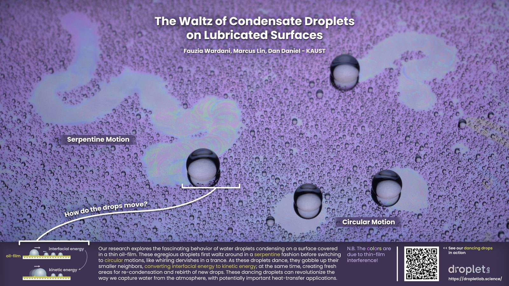
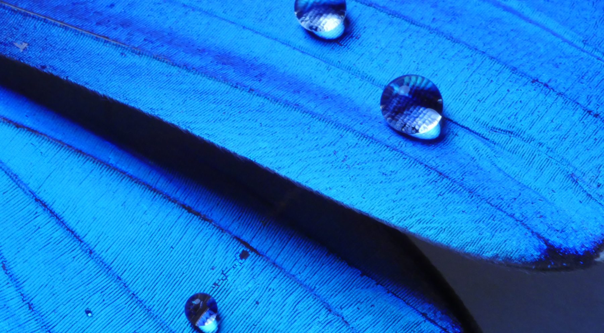

Our art
Lookbook
“I find it harder and harder every day to live up to my blue china.”
— Oscar Wilde
Gallery of Fluid Motion &
Soft Matter Entries
Entries submitted to APS Gallery of Fluid Motion/Soft Matter, celebrating the beauty of droplet and soft matter physics.

Emergent Collective Motion of Droplets
🏆 Winner
Dancing Drops on Lubricated Surfaces
🏆 Winner
Snapshots

Droplets on a blue morpho butterfly wing